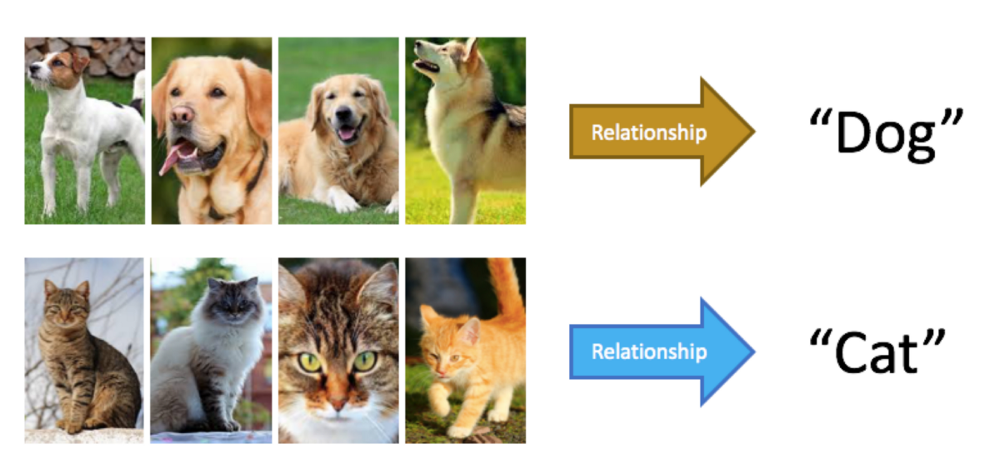
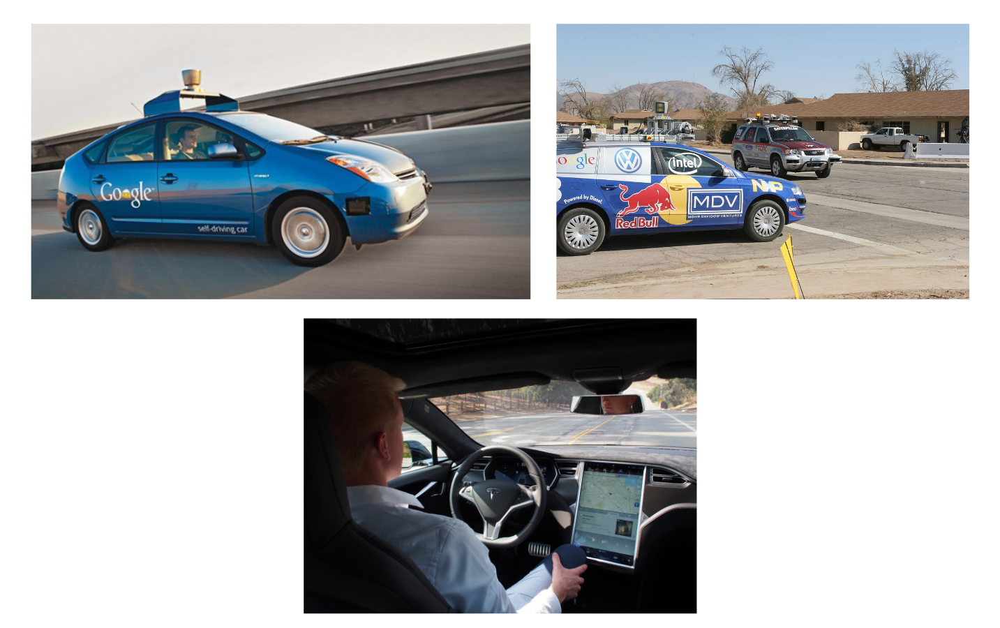
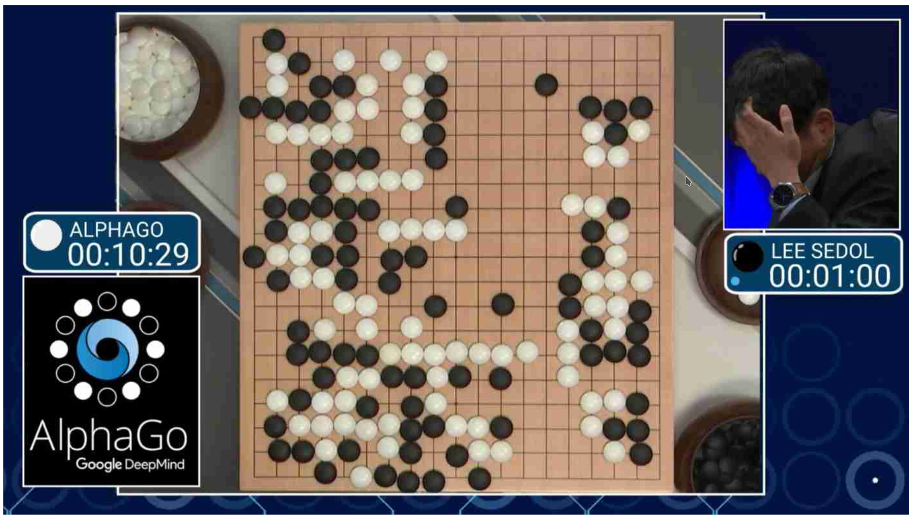
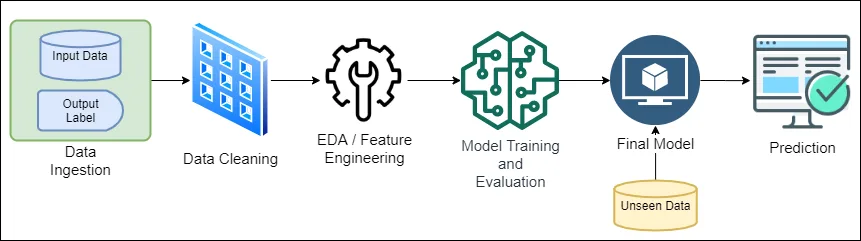
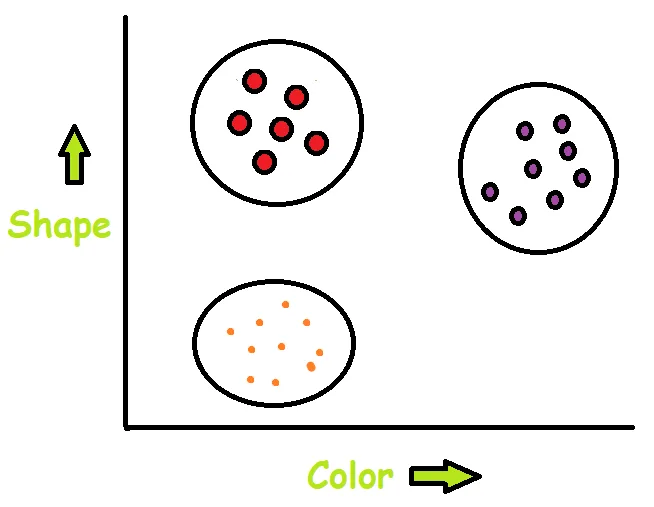

Machine Learning
Lecture: Introduction to Artificial Intelligence
Part 9
Learning objectives
In this section you will learn...
- ...what is machine learning (ML)
- ...why using ML?
- ...How ML relates to big data / statistics
- ...TBC
Credits
Giving Credits to the sources
What is machine learning?
Problem solving
- Computer scientists write programs
- Programs encode a set of rules useful for solving a specific problem
- Often: It's very difficult to specify that rules
Identifying the fern leafs
analyticsindiamag.com
Learning programs...
...learn the set of rules for solving a problem instead of encoding the rules itself.
Three general approaches are available:
- Unsupervised Learning: trial and error
- Supervised Learning: imitating behaviour on examples
- Reinforcement Learning: imitating behaviour on rewards
Learning means
Extracting obvious or hidden information from training examples into the system.
Why using machine learning?
Hard to write programs such as handwriting detection
DFKI
- What distinguishes a letter 'A' from 'H'?
- How does our brain solve the problem?
Approach for a learning program
- Collecting examples specifying the correct output for a given input.
- A machine learning algorithm creates a program out of these examples that solves the problem.
- If done well, the program works for new cases as well as for the trained ones.
Tasks of learning algorithms
Classification
Determine which discrete category the example is
What about this?
Is it a heart disease?
Pattern recognition
Speech recognition, facial identity
Recommender Systems
Noisy data, commercial pay-off (e.g., Amazon, Netflix
Information retrieval
Find documents or images with similar content
Computer vision
detection, segmentation, depth estimation, optical flow, etc.
Microsoft Kinect
https://www.youtube.com/watch?v=op82fDRRqSYRobotics
perception, planning, etc.
Autonomous driving
Flying robots
https://www.youtube.com/watch?v=YQIMGV5vtd4Playing games
Alpha Go
Poker
Recognizing anomalies
Unusual sequences of credit card transactions, panic situation at airport
Spam filtering, fraud detection
Detection of suspicious messages and activities
Many other things...
Types of Learning
Supervised Learning
Correct output is known for each training example
Supervision
Presenting trainig data with input and respective output to the system.
Concept Learning
System retrieves a model (~hypothesis) relating input data to output data.
Regression / Classification
Using that model to accurately predict outputs on any new input example.
Steps of Suvervised Learning
buddingengineer.com
- Data Ingestion: Reading data from external sources (Files, Websites, etc.)
- Data Cleaning: Make data sets digestable for algorithms (remove gaps, errors, etc.)
- EDA: Exploratory Data Analysis: Make suitable to the analysis (see Statistics section)
- Model Training and Evaluation:Choose Supervised Learning algorithm. Which one?
- Prediction:After model completion, retrain system with whole data set (seen and unseen)
Categories of Supervised Learning
- Classification: 1-of-N output (speech recognition, object recognition, medical diagnosis)
- Regression: real-valued output (predicting market prices, customer rating
Regression
Deals with continuous output data or when model relates between a dependent variables and one or more independent variables.
Typical Regression Algorithms
- Linear regression
- Step-wise regression
- Neural Network Regression
- Support Vector Machines
Example: Regression problems
- Predicting real estate prices.
- Household electric power consumption
- Predicting salary from HR devastate
Classification
Deals with discrete, separate and distinct output data or when a category should be predicted new input data belongs to.
Typical Classification Algorithms
- K-Nearest Neighbors
- Decision Tree
- Support Vector Machines
- Naive Bayes
- Neural Network Classification
Example: Classification problems
- Predicting cancer risk.
- Face recognition
- Mushroom classification
Exercise
Please watch the video Support Vector Machines (SVM) Overview and Demo using R and summarize:
- Make notes of what is the idea of SVM
- How works SVM principally
- Comprehend (try out) the demo with your
Time: 20 Minutes
Exercise
Please read the Introduction to Artificial Neural Networks and take notes to the following aspects:
- How work neural networks principally (Section 1 and 2)?
- How they are trained (section 3)?
- What to consider when implementing?(section 5)
Time: 30 Minutes
Exercise
Please read and follow the tutorial on datacamp
Neural Network Models in RTime: 30 Minutes
Unsupervised Learning
Only using input data
Whats that?
stackoverflow.com
How could we identify (blurred)?
- Unlikely that you saw an eye exactly like this...
- But... we identified the form, eyeball, lens, pupil
- We understood the hidden pattern of an eye...
Unsupervised learning:
Learning the hidden pattern from input data only with minimum human supervision.
Categories of unsupervised Learning
Unsupervised Learning
Create an internal representation of the input, capturing regularities/structure in data
- Form clusters
- Extraction of features
How do we know if a representation is good?
Clustering
buddingengineer.com
Grouping similar objects (in terms of features) together
Automated photo album creation
- Animals
- Familiy members
- Locations
- Landscapes
Clustering Algorithms
Usually very application dependent and specific to particular tasks as groups of objects can be built on a huge variety of parameters...
e. g., distance, statistical distribution, mean vectors, etc.
Association
A connection of cooperative link between people and organizations
- Used for finding hidden patterns or connections in data
- Rule-based machine learning method (develops rules from data
Grocery Shopping
- Always when buying bread, also butter is buyed
- The alogrithm could easily detect that relation
- Shop owner can place bread besides butter
Association is often used for
- Market Basket Analysis (What do people buy together?)
- Marketing Strategy (What to show people more?)
- Recommender System (Major Application)
- Price Bundling and Discounts
- Intrusion Detection
Dimensionality Reduction
How to deal with too many features
Goal
Representing the same information but reducing the dimensionality of the input data
Visualisation of 2D data is better to understand compared to 3D data.
See "Statistics and AI Session"
Some UL Algorithms
- K-Means
- Agglomerative Hierarchical Clustering
- Anomaly Detection
- Principal Component Analysis
- Apriori algorithm
Exercise
Please read the following article and summarize the algorithms
Five Most Popular Unsupervised Learning AlgorithmsTime: 20 Minutes
Reinforcement learning
Learn action to maximize payoff
What is RL?
Reinforcement Learning is about learning what to do - how to map situations to actions, so as to maximize a numerical reward signal. The learner is not told what to do, but instead it must discover which actions yield the most reward via trial-and-error.
How works RL?

- Agent interacts with environment
- Agents are self-trained on reward and punishment
- Goal: Take best possible action/path to gain maximum rewards.
Another Example

Some Terminology
- Agent - the learner
- Environment - Physical world the agent interacts with
- State - Current situation of the agent in the environment
- Reward - Reward the agent gets from the environment for an action
- Policy - The agent prepares a strategy how to map situations to actions
Categories of RL
Positive Reinforcement
Positive behaviour followed by positive consequence.
Negative Reinforcement
Positive behaviour followed by removal of negative consequences
Machine Learning and Big Data
- Typically simple ML techniques are applied
- Formerly: Performance issues for complex ML techniques. But this changed.
- Now: Many ML problems involve tons of data. But the domain of ML is still in AI (recognition etc.)
Machine Learning and Statistics
- ML uses statistical theory to build models
- ML is rediscovery of statistics already knew
- Emphasis is different
- Good piece of statistics:Clever proof that relatively simple estimation procedure is asymptotically unbiased.
- Good piece of ML: Demo that a complicated algorithm produces impressive results on a specific task.
- Can view ML as applying computational techniques to statistical problems. But with different aims (speed vs. accuracy)
Exercise
Please work through the End-to-End tutorial
https://machinelearningmastery.com/machine-learning-in-r-step-by-step/Time: 30 Minutes